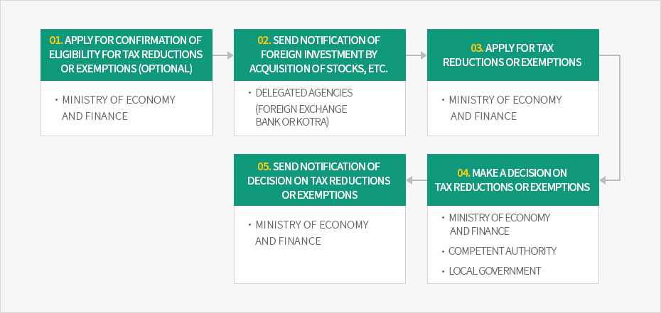
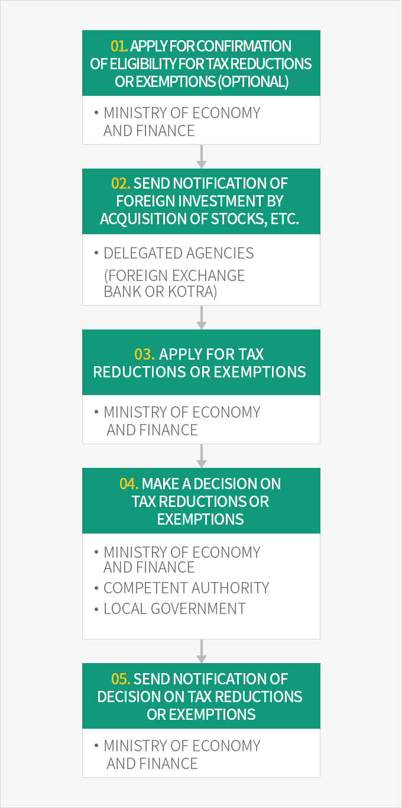

Procedures
- Home
- Incentives
- Tax Reductions and Exemptions
- Procedures
A foreign-invested company that intends to receive a tax reduction or exemption or change the details of a business must file an application to the Minister of Economy and Finance (or to the administrative authority of a free trade zone when the company is located in such a zone).
※ Related law: Article 121.2.6 of the Restriction of Special Taxation Act
Applications can be filed to the International Economic Policy Division (+82-44-215-7625) of the Ministry of Economy and Finance. Foreign investors who intend to concurrently send notification of a foreign investment and apply for tax reductions or exemptions may file a foreign investment notification form and an application form for tax reductions or exemptions to a foreign exchange bank (trust bank) or KOTRA.
※ Related laws: Article 15.3 of the Enforcement Rules of the Restriction of Special Taxation Act, Public Notice No. 2017-10 of the Ministry of Economy and Finance (April 4, 2017), Article 5.2 of the Regulations Defining Tax Exemptions for Foreign Investment
In the case of a new investment, the deadline for application is the last day of the taxable year in which the business commenced. If the details of the business which has been granted a tax reduction or exemption have changed, an application for change must be filed no later than two years from the day that the reasons for the change arose.
Application Procedures for Tax Reductions or Exemptions



- Apply for confirmation of eligibility for tax reductions or exemptions(optional) - ministry of economy and finance
- Send notification of foreign investment by acquisition of stocks, etc - delegated agencies(Foreign exchange bank or KOTRA)
- Apply for tax reductions or exemptions - ministry of economy and finance
- Make a decision on tax reductions or exemptions - ministry of economy and finance, Competent authority, Local government
- Send notification of decision on tax reductions or exemptions - ministry of economy and finance

Confirmation of Eligibility for Tax Reductions or Exemptions
A foreign investor may request a confirmation of eligibility for tax reductions or exemptions before sending notification of a foreign investment. The confirmation process verifies simply whether the foreign investor’s technology is subject to tax reductions or exemptions, hence, an application for tax reductions or exemptions must be made after notification of the investment.※ Related law: Article 121.2.7 of the Restriction of Special Taxation Act
Decision and Notification of Tax Reductions or Exemptions
The Minister of Economy and Finance must discuss applications for tax reductions or exemptions or for changes of tax reductions or exemptions with ministers of other relevant ministries and heads of local government. The Minister must make a decision on any tax reduction or exemption and send notification of the result to the applicant, the director of the National Tax Service, the commissioner of customs, and the head of the concerned local government within twenty days.
In inevitable cases, the processing period can be extended up to twenty days.
Preliminary Notification of Businesses Ineligible for Tax Reductions or Exemptions
If a business has been deemed ineligible for a tax reduction or exemption, the Minister of Economy and Finance must give a preliminary notification of this determination within twenty days from the date the application was submitted. The applicant may file a written form along with supplementary explanatory materials to request a review of the appropriateness of the preliminary notification within twenty days from the date the notification was delivered. The Minister of Economy and Finance must make a decision on any tax reductions or exemptions and send notification of the results within twenty days from the date of request.※ Related laws : Article 121.2.8 of the Restriction of Special Taxation Act, Article 116.3.1~6 of the Enforcement Decree of the Act